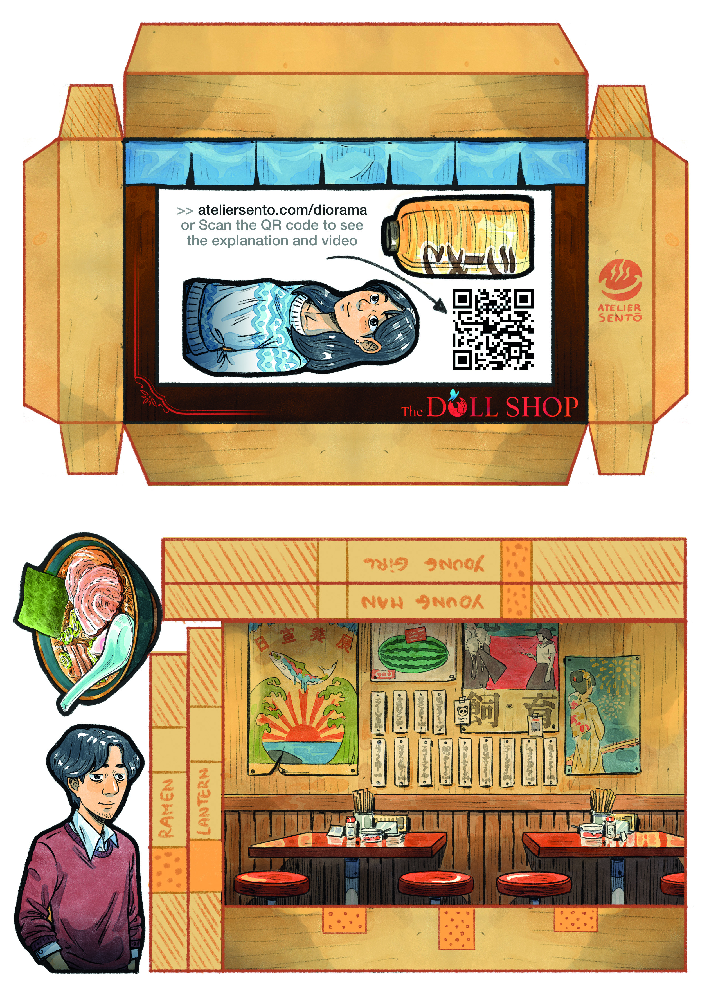

Please note: this process is somewhat delicate. We recommend watching the video carefully to avoid any mistakes! It is important to work step-by-step and allow sufficient drying time to make assembly easier and ensure a neat final result. 1. Using a craft knife and a cutting mat, cut out the various pieces. Be careful not to cut along the lines that indicate folds. Use a ruler to help with straight lines. 2. Fold each of the strips (labeled "young girl," "young man," "ramen," and "lantern") along the indicated lines. Overlap the two ends (the hatched sections) and glue them together to form angular rings. Let them dry for at least 1 hour. 3. Glue the strips labeled "young girl," "young man," and "ramen" to the back of their respective elements, aligning them with the bottom of the design (the orange area at the bottom). For the "lantern," align it with the top (the orange area at the top). Let dry for at least 1 hour, keeping them flattened under a book. 4. Using a blunt-edged tool (such as a butter knife) and a ruler, score the fold lines on the diorama background and the frame. 5. Fold the base of the diorama. Glue the "young girl," "young man," and "ramen" elements onto the base by applying glue to the dotted areas on their corresponding strips. Attach the lantern by aligning it with the top-left corner. Let dry for at least 1 hour. 5. Fold the various parts of the frame. Glue the tab at the bottom of the frame underneath the diorama base, pressing firmly with your finger to ensure it adheres well. Let dry for at least 1 hour. 6. Glue the two tabs at the bottom of the left and right side flaps underneath the diorama base. Press firmly with your finger to ensure it adheres well. Let it dry for at least 1 hour. 7. Glue the two flaps—on the left and right—to the back of the scene. Press firmly with your finger to ensure they adhere well. Let them dry for at least 1 hour. 8. Glue the two tabs at the top of the left and right flaps (the hatched side) to the underside of the frame’s ceiling. Press firmly with your finger to ensure they adhere well. Let them dry for at least 1 hour. 9. Glue the tab at the top of the frame to the back of the scene. Press firmly with your finger to ensure it adheres well. Let it dry for at least 1 hour. And there you have it! Place your diorama on a shelf to remember the great times spent with the characters from the game!
Attention, c’est un peu délicat. On vous conseille de regarder attentivement la vidéo pour ne pas faire d’erreur ! Il est important de faire les choses petit à petit et de respecter les temps se séchage pour faciliter le montage et s’assurer d’un résultat propre. 1. Avec un cutter et une planche, découper les différentes pièces. Attention à ne pas couper les lignes qui représentent les plis. Aidez-vous d’une règle pour les lignes droites. 2. Pliez chacune des bandes (young girl, young man, ramen et lantern) en suivant les lignes, superposer les 2 longueurs des extrémités (face hachurée) et les coller l’une par dessus l’autre pour former des anneaux angulaires. Laisser sécher au moins 1 h. 3. Coller les longueurs avec les noms écrits (young girl, young man, ramen) au dos de leur élément respectif en s’alignant avec le bas du motif (la zone orange en bas). Pour la lanterne, il faut aligner avec le haut (la zone orange en haut). Laisser sécher au moins 1h, aplatit sous un livre. 4. A l’aide d’un couteau arrondi et d’une règle, marquer les plis du décor et du cadre. 5. Plier la base du décor. Coller young girl, young man et ramen sur le socle en appliquant la colle sur la zone à pois des bandes qui leur correspondent. Coller la lanterne en la faisant coïncider l’élément avec le coin en haut à gauche. Laisser sécher au moins 1h. 5. Plier les différentes parties du cadre. Coller la languette du bas du cadre en dessous de la base du décor. Bien faire adhérer avec le doigt. Laisser sécher au moins 1h. 6. Coller les 2 languettes du bas des rabats gauche et droite en dessous de la base du décor. Bien faire adhérer avec le doigt. Laisser sécher au moins 1h. 7. Coller les 2 rabats gauche et droite à l’arrière du décor. Bien faire adhérer avec le doigt. Laisser sécher au moins 1h. 8. Coller les 2 languettes du haut des rabats gauche et droite (face hachurée) en dessous du plafond du cadre. Bien faire adhérer avec le doigt. Laisser sécher au moins 1h. 9. Coller la languette du haut du cadre à l’arrière du décor. Bien faire adhérer avec le doigt. Laisser sécher au moins 1h. Et voilà ! Déposez votre diorama sur une étagère pour vous souvenir des bons moments passés avec les personnages du jeu !